Ship faster, safer, smarter. GitOps CI/CD with Tekton & ArgoCD
OpenShift Pipelines
OpenShift Pipelines is a cloud-native, continuous integration and delivery (CI/CD) solution for building pipelines using Tekton. Tekton is a flexible, Kubernetes-native, open-source CI/CD framework that enables automating deployments across multiple platforms (Kubernetes, serverless, VMs, etc) by abstracting away the underlying details.
OpenShift Pipelines features:
-
Standard CI/CD pipeline definition based on Tekton
-
Build images with Kubernetes tools such as S2I, Buildah, Buildpacks, Kaniko, etc
-
Deploy applications to multiple platforms such as Kubernetes, serverless and VMs
-
Easy to extend and integrate with existing tools
-
Scale pipelines on-demand
-
Portable across any Kubernetes platform
-
Designed for microservices and decentralized teams
-
Integrated with the OpenShift Developer Console
This tutorial walks you through pipeline concepts and how to create and run a simple pipeline for building and deploying a containerized app on OpenShift
Concepts
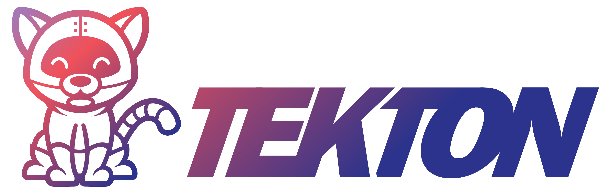
Tekton defines a number of Kubernetes custom resources as building blocks in order to standardize pipeline concepts and provide a terminology that is consistent across CI/CD solutions. These custom resources are an extension of the Kubernetes API that let users create and interact with these objects using kubectl and other Kubernetes tools.
The custom resources needed to define a pipeline are listed below:
-
Task: a reusable, loosely coupled number of steps that perform a specific task (e.g. building a container image)
-
Pipeline: the definition of the pipeline and the Tasks that it should perform
-
TaskRun: the execution and result of running an instance of task
-
PipelineRun: the execution and result of running an instance of pipeline, which includes a number of TaskRuns

In short, in order to create a pipeline, one does the following:
-
Create custom or install existing reusable
Tasks -
Create a
PipelineandPipelineResourcesto define your application’s delivery pipeline -
Create a
PersistentVolumeClaimto provide the volume/filesystem for pipeline execution or provide aVolumeClaimTemplatewhich creates aPersistentVolumeClaim -
Create a
PipelineRunto instantiate and invoke the pipeline
For further details on pipeline concepts, refer to the Tekton documentation that provides an excellent guide for understanding various parameters and attributes available for defining pipelines.
The Tekton API enables functionality to be separated from configuration (e.g. Pipelines vs PipelineRuns) such that steps can be reusable.
Deploy Application with OpenShift Pipelines
-
Go to
userX-tektonProject whereuserXis your username.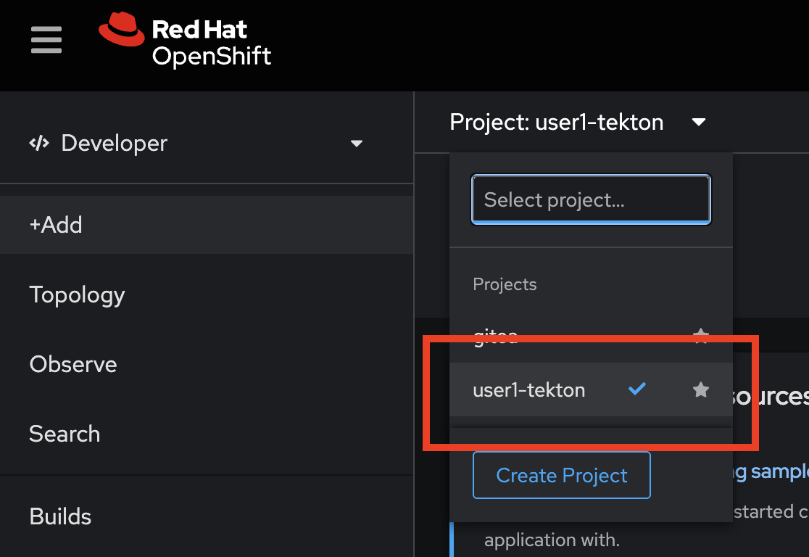
OpenShift Pipelines automatically adds and configures a ServiceAccount named pipeline that has sufficient permissions to build and push an image. This service account will be used later in the tutorial.
|
-
Open Web Terminal then run following commands to see the pipeline service account. (Change
userXin the command to your username)oc project userX-tekton oc get serviceaccount pipelineSample output.
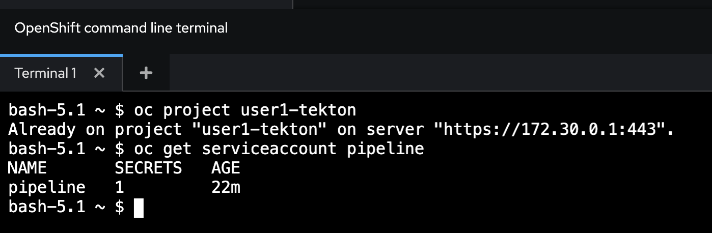
-
Try to run Tekton command line (
tkn). For the first time, it’ll ask you to download thetknbinary file, just typeythen pressEnter.tknSample output.
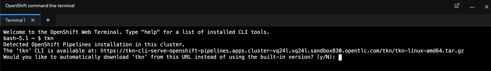
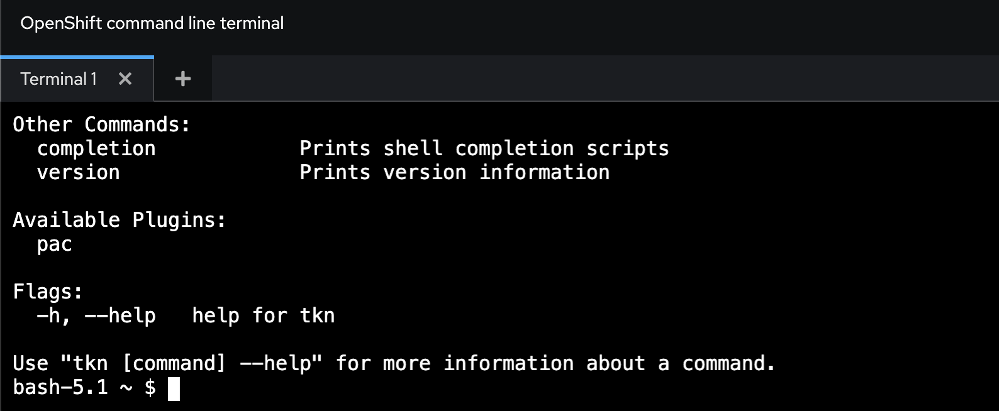
-
OpenShift Pipelines Operator installs few tasks in namespace
openshift-pipelines. Run this command in web terminal to see the installed tasks.tkn tasks ls -n openshift-pipelinesSample output:
NAME DESCRIPTION AGE buildah Buildah task builds... 1 day ago git-cli This task can be us... 1 day ago git-clone This object represe... 1 day ago maven This Task can be us... 1 day ago ...
Create User-defined Tekton Tasks
Tasks consist of a number of Steps that are executed sequentially. Tasks are executed/run by creating TaskRuns. A TaskRun will schedule a Pod. Each step is executed in a separate container within the same pod. They can also have inputs and outputs in order to interact with other tasks in the pipeline.
When a task starts running, it starts a pod and runs each step sequentially in a separate container on the same pod. This task happens to have a single step, but tasks can have multiple steps, and, since they run within the same pod, they have access to the same Volumes in order to cache files, access ConfigMaps, Secrets, etc. You can specify Volume using Workspace. It is recommended that Tasks uses at most one writeable Workspace. Workspace can be Secret, PVC, ConfigMap or emptyDir.
Note that only the requirement for a git repository is declared on the task and not a specific git repository to be used. That allows tasks to be reusable for multiple pipelines and purposes. You can find more examples of reusable tasks in the Tekton Catalog and OpenShift Catalog repositories.
-
Create the
apply-manifestsandupdate-deploymentTasksfrom the repository usingocorkubectlcommand.
These 2 tasks you will need for creating a Pipeline in the next section. Review apply-manifests and update-deployment tasks definition if you need.
|
-
Run these commands to create
Tasks.oc create -f https://raw.githubusercontent.com/openshift/pipelines-tutorial/master/01_pipeline/01_apply_manifest_task.yaml oc create -f https://raw.githubusercontent.com/openshift/pipelines-tutorial/master/01_pipeline/02_update_deployment_task.yaml -
You can take a look at the tasks you created using the Tekton CLI (change
userXin the command to your username).oc project userX-tekton tkn task lsSample output.
NAME AGE apply-manifests 10 seconds ago update-deployment 4 seconds ago
Create Tekton Pipelines
A pipeline defines a number of tasks that should be executed and how they interact with each other via their inputs and outputs.
In this tutorial, you will create a pipeline that takes the source code of the application from Git and then builds and deploys it on OpenShift.
-
Go to Pipelines Menu, select Pipelines tab, then click Create button and select Pipeline.
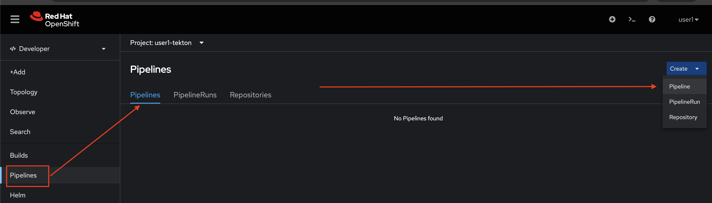
-
In Pipeline builder, you can create pipeline with GUI or YAML editor. Luckily, we already have the completed YAML for creating a pipeline for this lab. So, let’s switch to YAML view to open YAML editor.
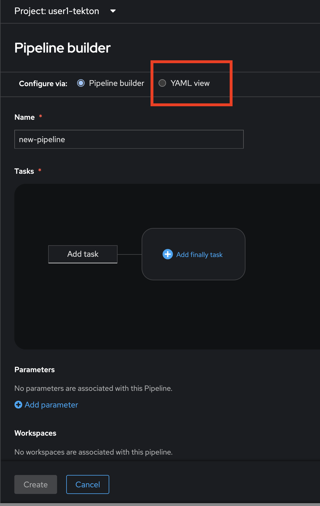
-
Delete all YAML in the editor. Copy the YAML in this code snippet and paste to the YAML editor, then click Create button.
apiVersion: tekton.dev/v1 kind: Pipeline metadata: name: build-and-deploy spec: workspaces: - name: shared-workspace params: - name: deployment-name type: string description: name of the deployment to be patched - name: git-url type: string description: url of the git repo for the code of deployment - name: git-revision type: string description: revision to be used from repo of the code for deployment default: master - name: IMAGE type: string description: image to be build from the code tasks: - name: fetch-repository taskRef: resolver: cluster params: - name: kind value: task - name: name value: git-clone - name: namespace value: openshift-pipelines workspaces: - name: output workspace: shared-workspace params: - name: URL value: $(params.git-url) - name: SUBDIRECTORY value: "" - name: DELETE_EXISTING value: "true" - name: REVISION value: $(params.git-revision) - name: build-image taskRef: resolver: cluster params: - name: kind value: task - name: name value: buildah - name: namespace value: openshift-pipelines params: - name: IMAGE value: $(params.IMAGE) workspaces: - name: source workspace: shared-workspace runAfter: - fetch-repository - name: apply-manifests taskRef: name: apply-manifests workspaces: - name: source workspace: shared-workspace runAfter: - build-image - name: update-deployment taskRef: name: update-deployment params: - name: deployment value: $(params.deployment-name) - name: IMAGE value: $(params.IMAGE) runAfter: - apply-manifests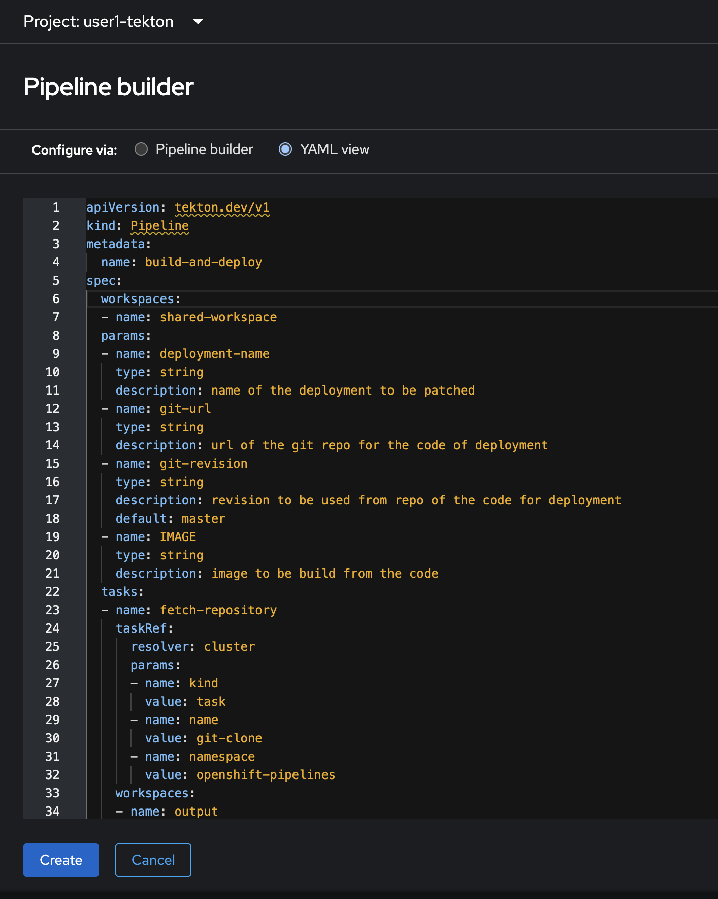
-
The
build-and-deployPipeline should be created.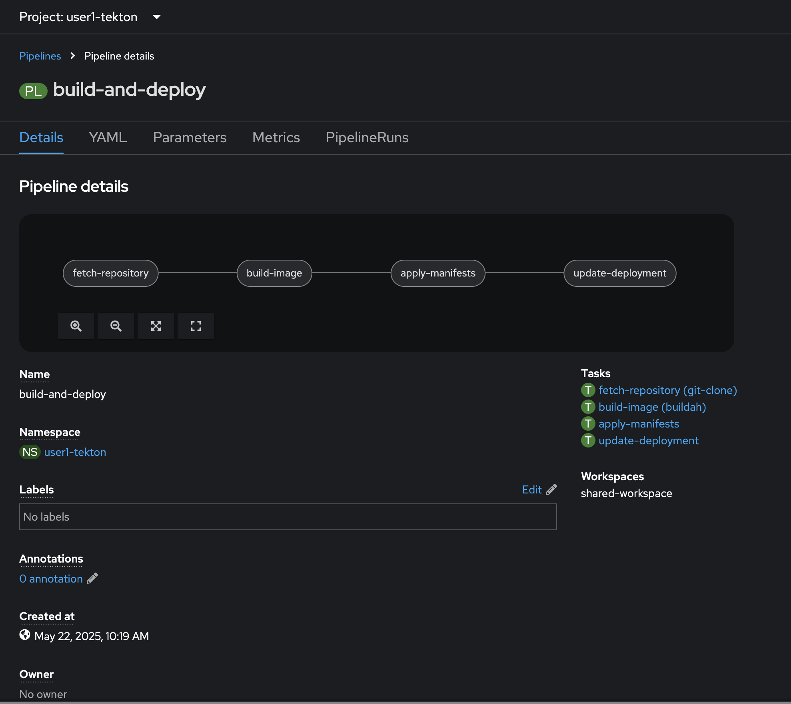
-
View Pipeline parameter in Parameters tab,
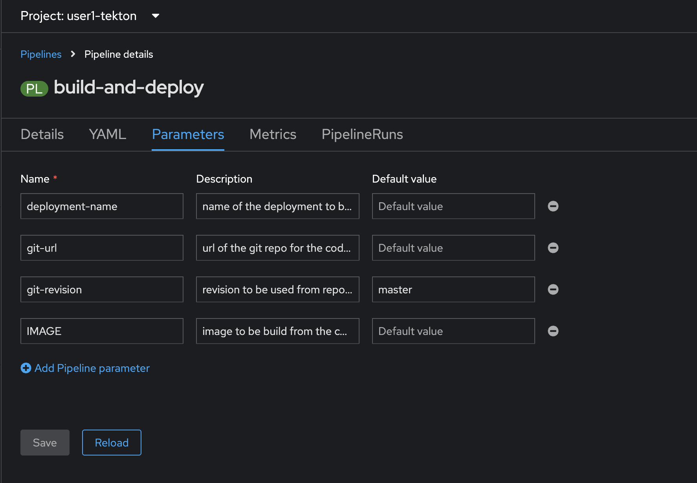
-
In Metrics tab, Pipelines Metrics will help you to monitor performance and status.
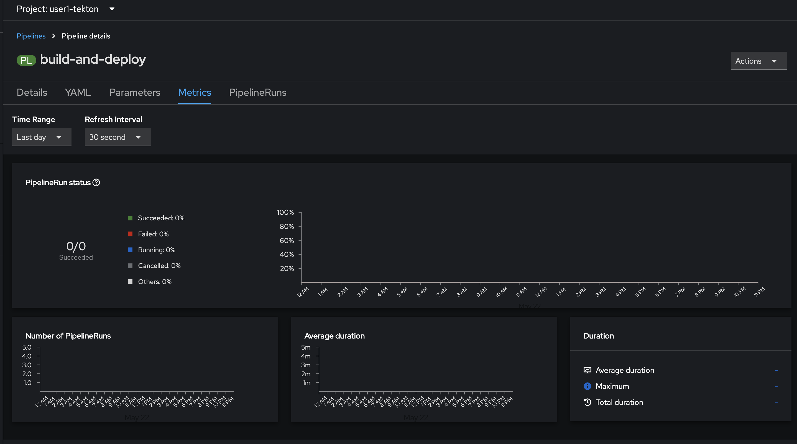
-
This pipeline helps you to build and deploy sample application, by configuring right resources to pipeline.
Here is a summary of Pipeline Steps (what the pipeline does):
-
Clones the source code of the application from a Git repository by referring to
git-urlandgit-revisionparammeters. -
Builds the container image of application using the
Buildahtask that uses Buildah to build the image -
The application image is pushed to an image registry based on the
IMAGEparameter. -
The new application image is deployed on OpenShift using the
apply-manifestsandupdate-deploymenttasks we’ve created earlier.
-
You might have noticed that there are no references to the Git repository or the image registry it will be pushed to in pipeline. That’s because pipeline in Tekton are designed to be generic and re-usable across environments and stages through the application’s lifecycle.
Pipelines abstract away the specifics of the git source repository and image to be produced as PipelineResources or Params. When triggering a pipeline, you can provide different git repositories and image registries to be used during pipeline execution. Be patient! You will do that in a little bit in the next section.
The execution order of tasks is determined by dependencies that are defined between the tasks via inputs and outputs as well as explicit orders that are defined via runAfter.
The workspaces field allows you to specify one or more volumes that each Task in the Pipeline requires during execution. You specify one or more Workspaces in the workspaces field.
-
Create
PersistentVolumeClaimfor share workspace inPipeline. Click on the + button at the top right corner of OpenShift console, then select Import YAML.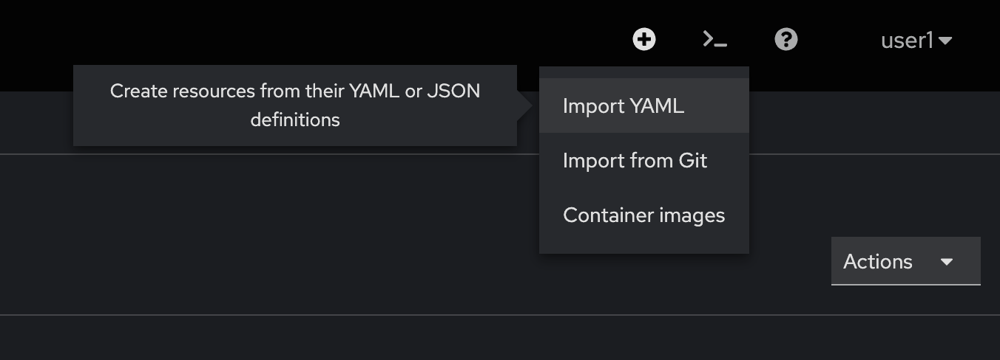
-
Copy this YAML and paste to the editor, then click Create button.
apiVersion: v1 kind: PersistentVolumeClaim metadata: name: source-pvc spec: accessModes: - ReadWriteOnce resources: requests: storage: 500MiPersistentVolumeClaim should be created successfully.
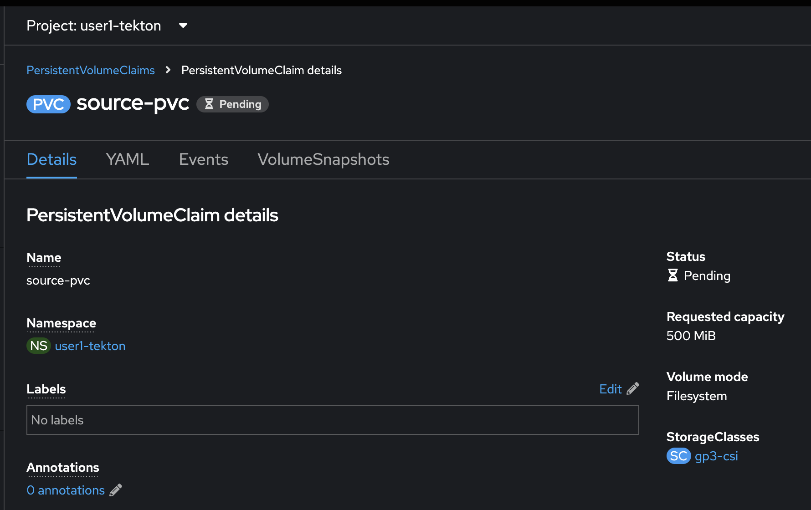
Trigger Pipeline
Now that the pipeline is created, you can trigger it to execute the tasks specified in the pipeline. Triggers extend the Tekton architecture with the following CRDs:
-
TriggerTemplate - Templates resources to be created (e.g. Create
PipelineResourcesandPipelineRunthat uses them) -
TriggerBinding - Validates events and extracts payload fields
-
Trigger - combines
TriggerTemplate,TriggerBindingsand interceptors. -
EventListener - provides an addressable endpoint (the event sink). Trigger is referenced inside the EventListener Spec. It uses the extracted event parameters from each
TriggerBinding(and any supplied static parameters) to create the resources specified in the correspondingTriggerTemplate. It also optionally allows an external service to pre-process the event payload via the interceptor field. -
ClusterTriggerBinding - A cluster-scoped TriggerBinding
Using tektoncd/triggers in conjunction with tektoncd/pipeline enables you to easily create full-fledged CI/CD systems where the execution is defined entirely through Kubernetes resources.
| You can learn more about triggers by checking out the docs |
In the following sections, you will go through each of the above steps to define and invoke a pipeline.
A PipelineRun is how you can start a pipeline and tie it to the persistentVolumeClaim and params that should be used for this specific invocation.
-
Go to gitea web console and copy Git repository URL of the
simple-rest-gorepository.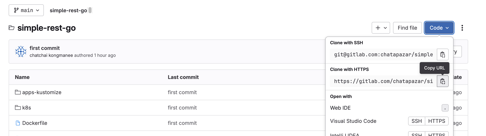
-
Go to Pipelines menu, select Pipelines tab, then click on action menu of
build-to-deploypipeline, then select start.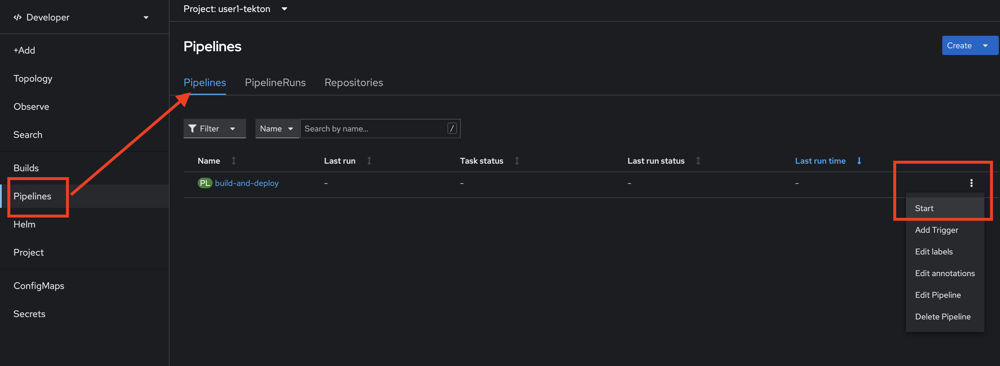
In the Parameter section, enter following parameters:
* Enter simple-rest-go to deployment-name parameter.
* Paste the simple-rest-go Git reposity URL you’ve copied to git-url parameter. (Don’t use the URL in the screenshot!)
* Enter main to git revision parameter.
* Enter image-registry.openshift-image-registry.svc:5000/<project>/simple-rest-go:latest to IMAGE parameter.
|
Change the <project> that matches to your username i.e. user1-tekton |
-
Leave Timeouts as default.
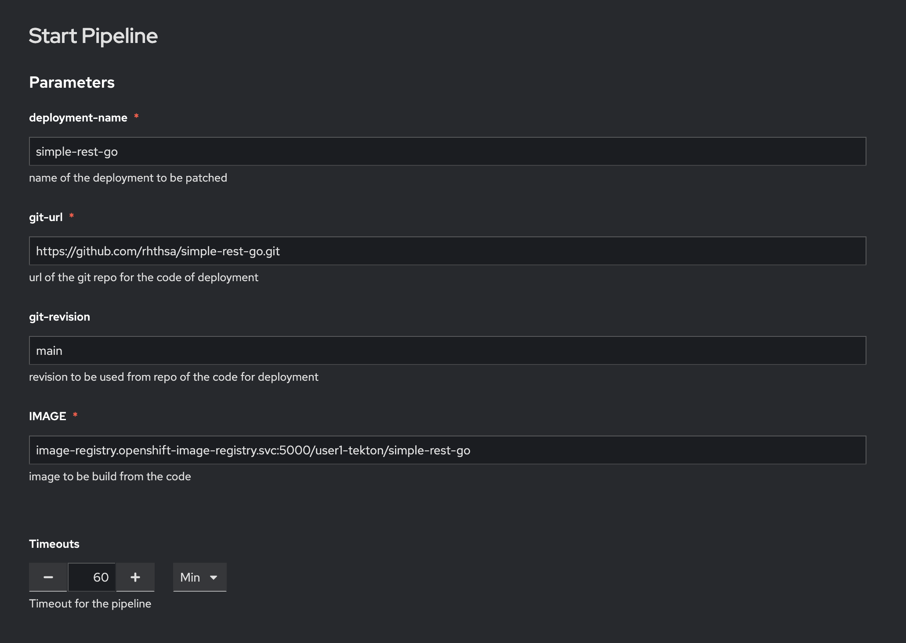
-
In the Workspaces section, select
PersistentVolumeClaimandsource-pvcfor shared-workspace parameter, then click Start button.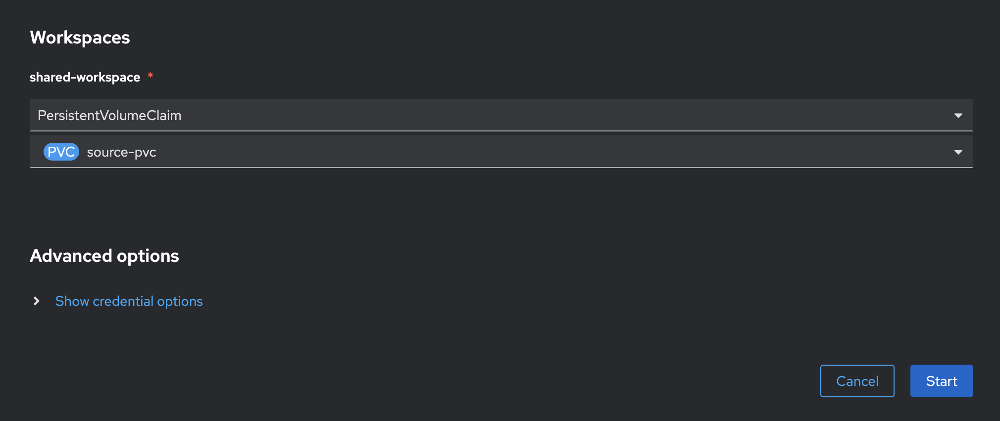
-
The
PipelineRunwill be created. you can view details by click on each task inPipelineRunto see the details.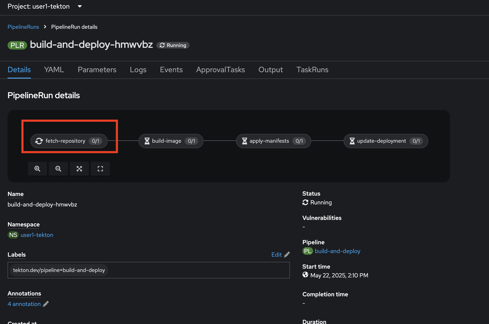
-
Go to Logs tab to view logs from each task.
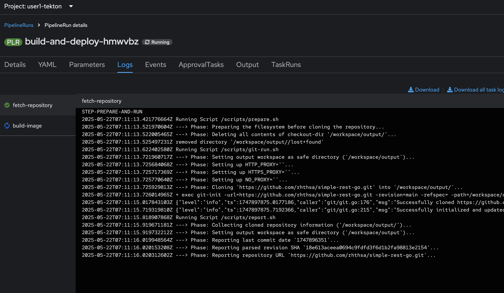
-
Wait until the pipeline status changes to
Succeeded!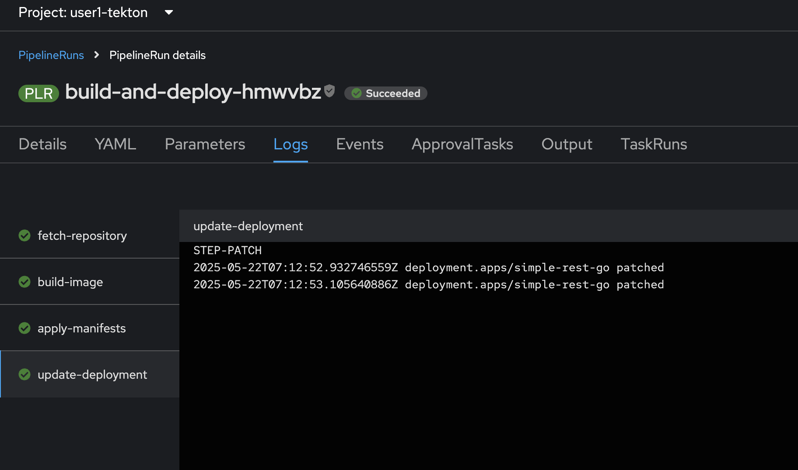
-
Back to Pipeline menu to view the status of
PipelineandPipelineRun.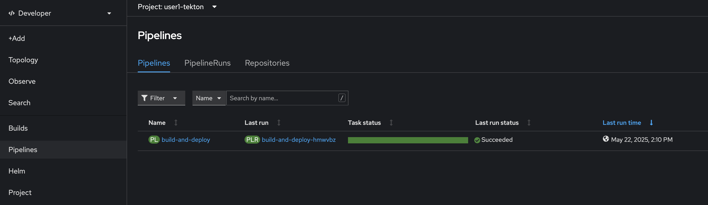
-
Click Topology menu on the left to open Topology view. Select
simple-rest-goDeployment, then go to Resource tab on the right panel, then open the application URL in the Routes section.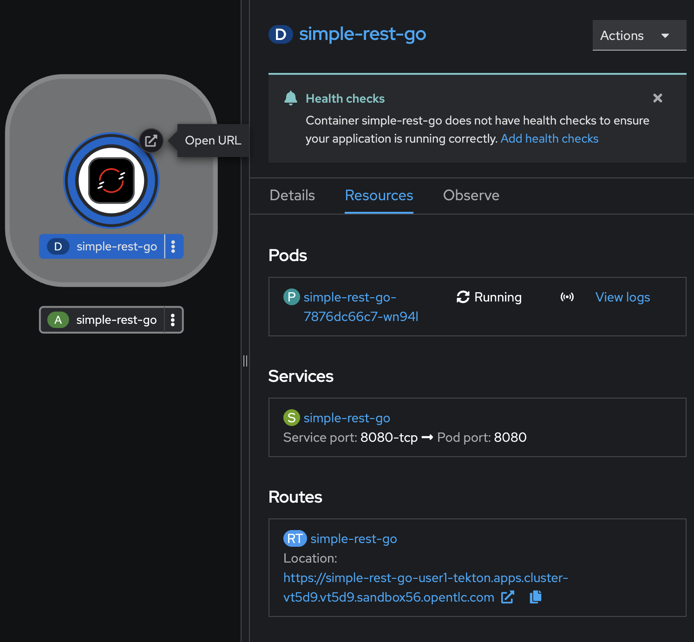
-
You should be able to see a response from the application we’ve deployed via OpenShift Pipelines!. image::tekton/tk-22.png[]
[Optional] Trigger Pipeline with Tekton CLI
-
Start a pipeline to build and deploy the application using
tkncommand line.tkn pipeline start <pipelinename> \ --prefix-name <prefixname> \ -w <share_storage> \ -p <param=value> \ --use-param-defaultsSample output.
Pipelinerun started: <prefixname>-xxxxx In order to track the pipelinerun progress run: tkn pipelinerun logs <prefixname>-xxxxx -f -n <project> -
As soon as you start pipeline, a
PipelineRunwill be instantiated and pods will be created to execute the tasks that are defined in the pipeline. -
Run this command to view all pipelines and statuses.
tkn pipeline listSample output.
NAME AGE LAST RUN STARTED DURATION STATUS build-and-deploy 10 minutes ago build-and-deploy-9tb2q 47 seconds ago --- Running -
Above we have started
build-and-deploypipeline, with relevant pipeline resources to deploy the application. Run this command to viewPipelineRunstatus.tkn pipelinerun lsSample output.
NAME STARTED DURATION STATUS build-and-deploy-9tb2q 1 minute ago --- Running build-and-deploy-t9tpq 1 minute ago --- Running -
Check out the logs of the pipelinerun as it runs using the
tkn pipeline logscommand which interactively allows you to pick the pipelinerun of your interest and inspect the logs:tkn pipeline logs -fSample output.
? Select pipelinerun: [Use arrows to move, type to filter] > build-and-deploy-9tb2q started 3 minutes ago build-and-deploy-t9tpq started 7 minutes ago -
After a few minutes, the pipeline should finish successfully. Run this command to view
PipelineRunstatus.tkn pipelinerun listSample output.
NAME STARTED DURATION STATUS build-and-deploy-9tb2q 1 minute ago 1m23s Succeeded build-and-deploy-t9tpq 5 minutes ago 1m31s Succeeded -
If you want to re-run the pipeline again, you can use the following short-hand command to rerun the last pipelinerun again that uses the same workspaces, params and service account used in the previous pipeline run:
tkn pipeline start build-and-deploy --lastWhenever there is any change to your repository we need to start the pipeline explicitly to see new changes take effect.
[Bonus!] Add Web Hook for Trigger Pipeline
Triggers in conjunction with pipelines enable us to hook our Pipelines to respond to external Git events (push events, pull requests etc). get more information and example from this tutorial.